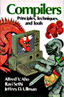

| See Also |
| The
Bison Manual, by C. Donnelly and R.
Stallman. Free
Software Foundation, 1995. This is the definitive reference on bison and is part of the bison distribution as the file bison.textinfo. The manual includes both tutorial and reference sections and is of great help for novice and experienced programmers. The documentation of geyacc is based on this manual. |
|
 |
Lex
& Yacc, second edition, by J. R.
Levine, T. Mason, D. Brown. O'Reilly
& Associates, Inc., 1992. ISBN 1-56592-000-7. This book is both a reference manual for lex and yacc with a thorough description of the various flavors of these tools, and a tutorial with well-written examples explained in details. |
|  | Compilers:
Principles, Techniques, and Tools, by
A. V. Aho, R. Sethi, J. D. Ullman. Addison-Wesley, 1986.
ISBN 0-201-10088-6. The classic compiler text, also known as the Dragon Book because of its cover. It includes detailed discussions of the theory behind syntax analysis along with sketches of possible implementations (see chapter 4, page 159). |
 |
Compiler
Design, by R. Wilhelm, D. Maurer. Addison-Wesley, 1995.
ISBN 0-201-42290-5. This book provides a comprehensive, modern approach to the design and construction of compilers, with a chapter devoted to syntax analysis (see chapter 8, page 265). |
The Eiffel Archive contains many links to Eiffel libraries sorted by category.
Object Tools developed Eiffel wrappers and support for Eiffel/S that allow Flex and Bison to be used for the generation of lexical analyzers and parsers using Eiffel under MS-DOS. This package is distributed under the GNU GPL license and includes the DOS versions of Flex and Bison. This package can be downloaded here.
Pirmin Kalberer ported the above package to ISE Eiffel 3. The bison distribution can be downloaded from Pirmin's Bison for Eiffel page.
ISE's EiffelParse library provides a set of object-oriented mechanisms for parsing, based on simple principles allowing a direct mapping from a BNF-like syntax specification to Eiffel classes. However this library is cumbersome to use since one has to write an Eiffel class per syntactic construct. This can be solved by using YOOCC to generate these classes automatically.
YOOCC (Yes! An Object-Oriented Compiler Compiler) provides a Compiler Compiler written entirely in Eiffel that utilises an extended parse library which evolved from the ISE EiffelParse library. YOOCC presents the programmer with a tool for automatically generating a processor framework (Eiffel source code) from a grammar. The approach reconciles object-oriented principles, processor generation, and an object-oriented language (Eiffel). YOOCC has been developed by Jon Avotins and Glenn Maughan from Monash University, Melbourne, Australia. It works with ISE Eiffel 3.2.8.
TROOPER (Truly Reusable OO Parser for Eiffel Re-engineering) encapsulates the complexities of lexical analysis and parsing of Eiffel texts using an extended parse library which evolved from the ISE EiffelParse library. It provides a complete working parser written entirely in Eiffel. Semantic actions can be added to the parsing constructs to develop different tools such as pretty-printers, compilers, etc. TROOPER has been developed by Jon Avotins and Glenn Maughan from Monash University, Melbourne, Australia. It works with ISE Eiffel 3.2.8.
Epg: an Eiffel Parser Generator is a wrapper and supporting classes to use standard Unix tools to generate Eiffel parsers. Epg is a freeware developed by Christoph Zenger. This package requires lex/yacc/sed etc. and works with Eiffel/S 1.3. More information about epg, including downloading instructions, can be found at the Eiffel Archive.
Geyacc has been written in Eiffel after reverse-engineering the GNU Bison utility (version 1.25) distributed by the Free Software Foundation. The C source code of the Bison utility can be downloaded from GNU FTP site.
|
Copyright © 1999-2019, Eric
Bezault mailto:ericb@gobosoft.com https://www.gobosoft.com Last Updated: 27 September 2019 |